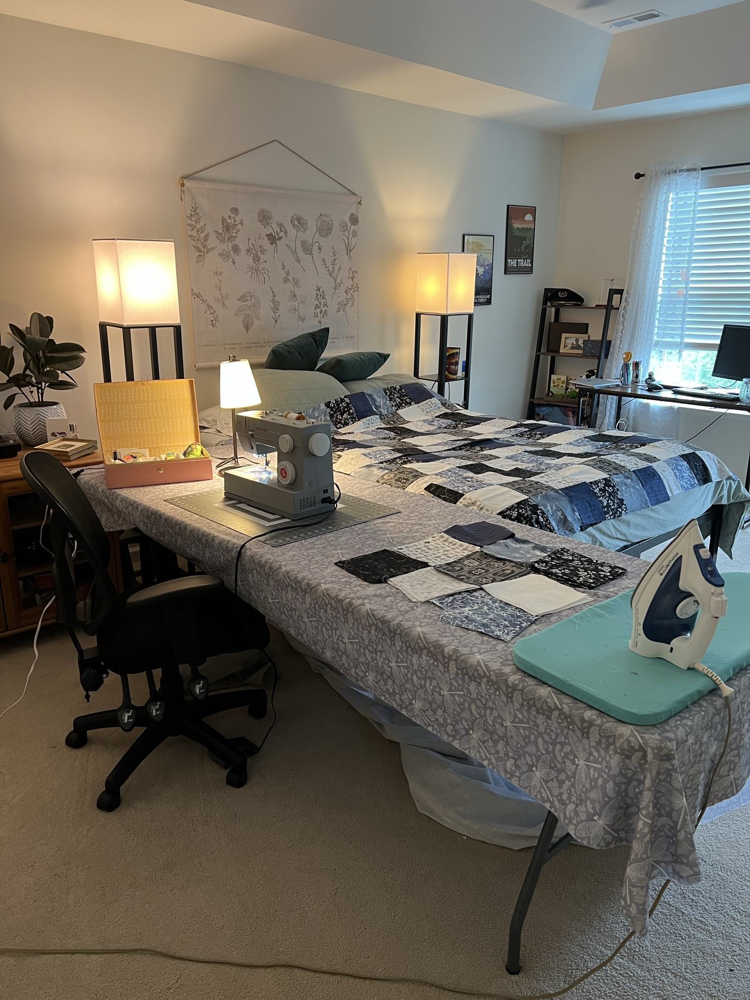
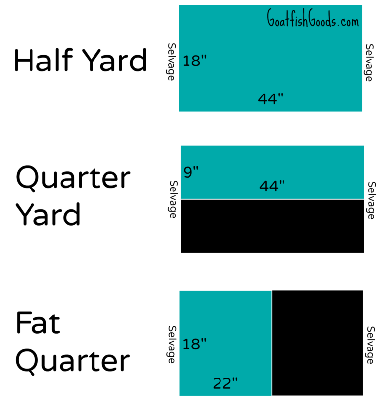

Quilting Basics: What you'll Need!
-
Rotary Cutter, Cutting Mat, and Ruler:
I use
this
exact set and it works for me. I wouldn't get a mat any smaller than this one.
-
Thread: Cotton is better to work with, but expensive.
My favorite is
Gutermann
.
-
Pins: Use whatever you have!
These
sewing clips
are fantastic for attaching binding, sewing make up bags, etc. but not neccesary.
- Iron: A clothing iron will work just fine. I swear by a Rowenta I found at a garage sale for $10.
- Scissors: I try to rely on the rotary cutter, but you'll need them inevitably.
- Sewing Machine: I use a Singer Heavy Duty 4432. People hate on it, but I think it's a reasonable beginner machine. And it's important to note Singer doesn't make the same quality machines they made 100 years ago. I have heard good thingas about the Brother XR9950 as well.
- Seam Ripper: Typically comes with your machine.
- Fabric: The expensive part :/ If you are following a pattern, the pattern will tell you how much fabric to buy. If you are buying fabrics off the bolt, let me know! I can try to help you figure out how much you need.
- Space: I personally need a lot of space, I'm sure you can get by with less. See below for my set up when I first started quilting!

Parts of a Quilt
Top quilt:
The meat of your project (you'll spend hours cutting, ironing, sewing, and piecing this part)
Batting:
The insulating middle part. There's lots of options; cotton, wool, bamboo, or a cotton/poly blend. (I've used cotton and cotton/poly blend) Craft stores typically sell it off the bolt, or in traditional bedding sizes (queen, full, etc). If you go through the longarmer I mentioned below, you can buy the batting through her and she takes care of all that for you.
Quilt backing:
Whatever you want on the back. I typically buy "extra wide quilt backing", which is 108 ish inches wide instead of the normal 40 - 60 inches. That way I don't have a seam in the backside fabric. I have heard of people using "minky" as a quilt backing, but I am a bit too traditional for that :)
Long Armer
You can complete a quilt without long arming, but my favorites are all long armed! (we can discuss how this works when it comes up, but this is who I like to use. She lives in Roselle, and takes about 6 weeks. I recommend checking out her "penny pantogram" promotion, and I add on the "exact cut" for $10. Totally worth it. She will also do your binding if you want. I'm sure she does incredible work but I have always done mine myself)
Fabrics
It's an overwhelming topic! Here are some words you might see when you go to buy quilting fabrics:
Charm Packs (precut 5 inch squares)
Layer Cakes (10 inch squares)
Jelly Rolls (2.5 inch strips)
Mini Charms (2.5 in squares)
Fat Quarters (see below)
I don't buy these Precut options much because I like to spend 2 hours in the fabric store matching patterns and colors. If that sounds stressful, Charm packs might be a good option for you!
Fat Quarters
Cut differently than how you would normally ask for 1/4 yard off the bolt at the cutting counter. A lot of Quilters prefer them. Some patterns will specify this cut is required. I don't really have a preference. But that's what it means.
I use cotton exclusively when quilting. I haven't ventured out of cotton much with clothing either!

Tags
It is important to have a tag on your work, especially if you are giving them away! I customized some from this Etsy Shop. (I know there are so many other things you have to buy when you are just starting out, so don't worry too much about this one yet!)